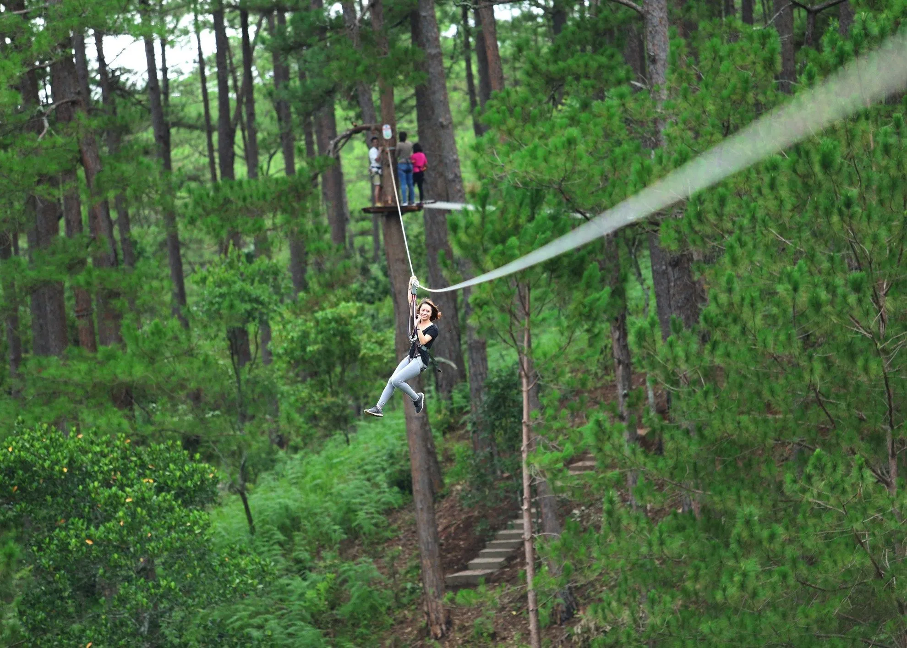
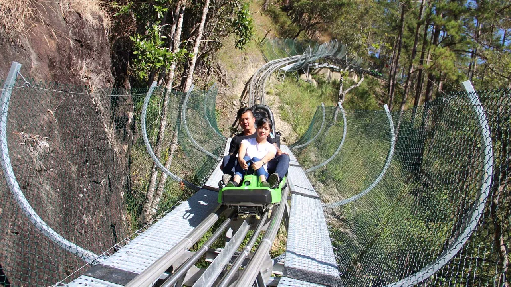
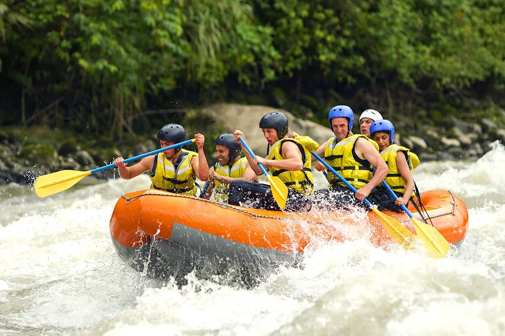
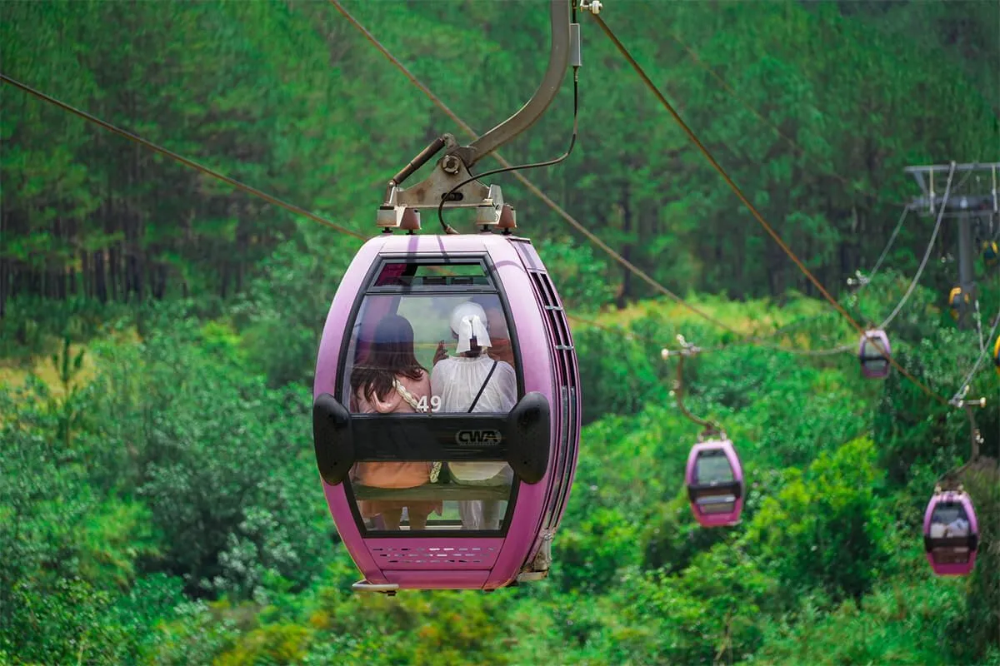
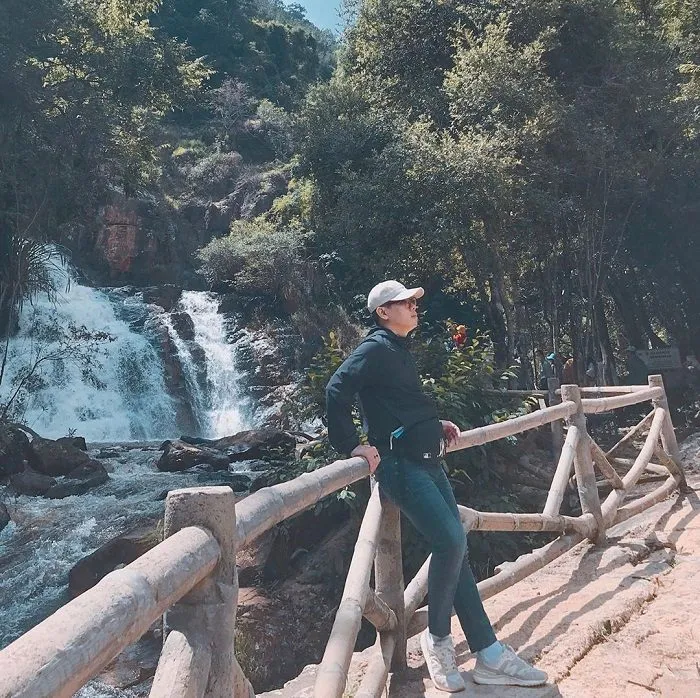
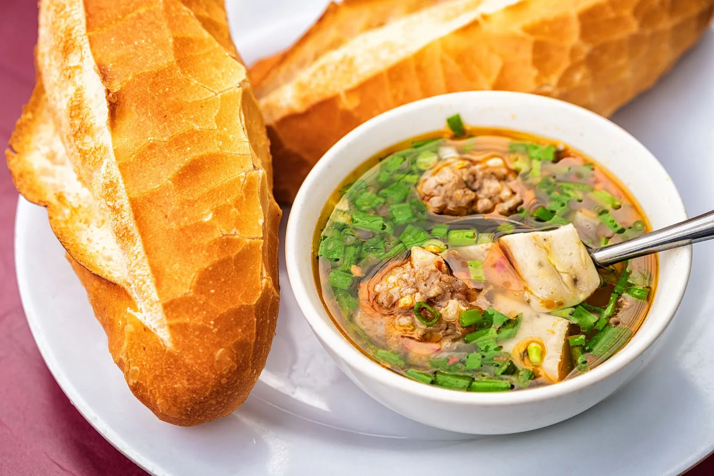
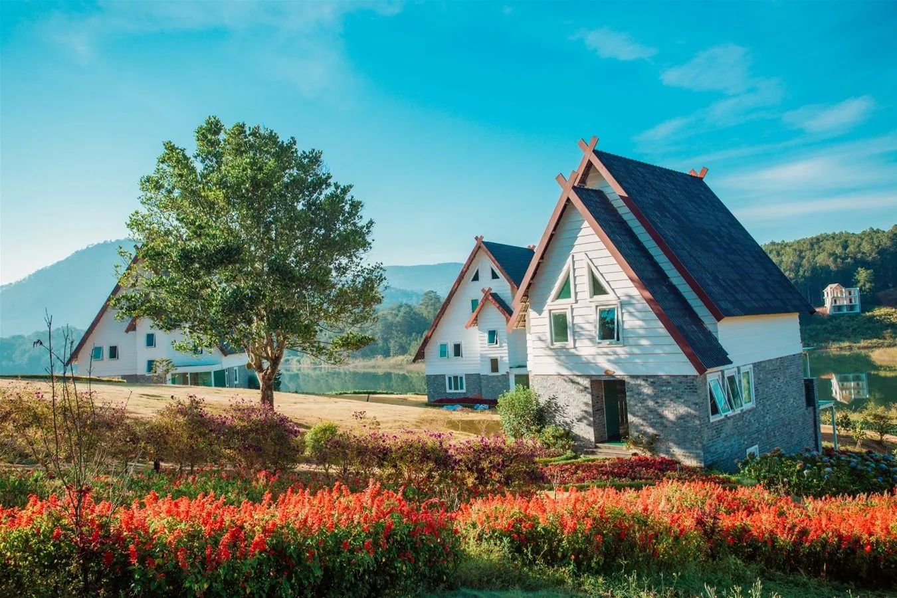

Khám phá thác Datanla Đà Lạt: Thiên đường phiêu lưu lý tưởng

Mục lục bài viết
- 1. Giới thiệu về thác Datanla
- 2. Vị trí của thác Datanla
- 3. Thời điểm thích hợp để ghé thăm thác Datanla
- 4. Cách di chuyển đến thác Datanla
- 5. Giá vé tham quan và dịch vụ tại khu du lịch thác Datanla
-
6. Những hoạt động hấp dẫn không thể bỏ lỡ tại khu du lịch thác Datanla
- 6.1. Đu dây vượt thác Datanla – Trải nghiệm canyoning đầy kịch tính
- 6.2. Đu dây mạo hiểm giữa rừng – Thử thách độ dẻo dai và tinh thần đồng đội tại thác Datanla
- 6.3. Trượt máng xuyên rừng – "Bay" giữa thiên nhiên hoang dã ở thác Datanla
- 6.4. Cùng đồng đội chèo thuyền vượt thác đầy kịch tính tại thác Datanla
- 6.5. Ngồi cáp treo – Ngắm toàn cảnh thiên nhiên từ trên cao thác Datanla
- 6.6. Tản bộ xuyên rừng – Hành trình nhẹ nhàng nhưng đầy thi vị tại thác Datanla
- 7. Ẩm thực khi đến thác Datanla – Ăn gì cho đúng vị?
- 8. Gợi ý nơi lưu trú gần thác Datanla – Ở đâu cho tiện và chill?
- 9. Đà Lạt có gì chơi? Gợi ý các hoạt động "must try" khi ghé thăm thành phố sương mù gần thác Datanla
- 10. Những điều cần ghi nhớ khi khám phá thác Datanla
- 11. Nạp năng lượng sau chuyến khám phá thác Datanla tại Tiệm Nướng & Chill Xóm Lèo
Tọa lạc giữa núi rừng Tây Nguyên hùng vĩ, thác Datanla là một trong những điểm đến nổi bật của Đà Lạt, thu hút du khách yêu thích cảm giác mạnh và mong muốn thử thách bản thân qua các trò chơi mạo hiểm đầy kích thích. Đây chính là "thiên đường giải trí" giữa thiên nhiên hoang sơ, nơi bạn có thể "bung xõa" hết mình trong làn nước mát lạnh và không khí trong lành.

Với khí hậu se lạnh đặc trưng cùng khung cảnh thiên nhiên thơ mộng, khu vực thác Datanla còn gây ấn tượng bởi các công trình kiến trúc cổ kính mang dấu ấn Pháp, góp phần tạo nên nét đẹp giao thoa giữa thiên nhiên và lịch sử, làm say lòng biết bao du khách. Đừng bỏ lỡ cơ hội tận hưởng vẻ đẹp tráng lệ của ngọn thác lớn bậc nhất Lâm Đồng và tham gia vào loạt trò chơi phiêu lưu hấp dẫn.
1. Giới thiệu về thác Datanla
Nằm giữa lòng cao nguyên Lâm Viên, thác Datanla là một điểm đến nổi bật của Đà Lạt, nổi tiếng với vẻ đẹp hoang sơ hòa quyện cùng nét dữ dội và mạnh mẽ của thiên nhiên. Dòng thác cao khoảng 20 mét đổ xuống từ các ghềnh đá, chảy qua nhiều tầng lớp tạo nên làn nước trong mát. Phía trên là dòng suối Tiên hiền hòa, còn bên dưới là vực sâu đầy thách thức được mệnh danh là Vực Tử Thần – nơi gợi nhiều tò mò cho du khách ưa khám phá.
Cảnh quan tự nhiên kết hợp với địa hình độc đáo khiến nơi đây không chỉ là điểm tham quan ngoạn mục mà còn được phát triển thành khu du lịch sinh thái đa dạng. Du khách đến thác Datanla có thể tận hưởng không gian thư giãn, chiêm ngưỡng thiên nhiên, đồng thời thử sức với các hoạt động giải trí, mạo hiểm và khám phá đầy hấp dẫn.

2. Vị trí của thác Datanla
Thác Datanla tọa lạc trong khu du lịch cùng tên, nằm trên quốc lộ 20, đoạn qua đèo Prenn – một trong những cung đường đèo nổi tiếng của Đà Lạt. Địa danh này thuộc phường 3, thành phố Đà Lạt, tỉnh Lâm Đồng. Từ trung tâm thành phố, du khách chỉ mất khoảng 10km di chuyển để đến đây, và khu vực này cũng chỉ cách thác Prenn khoảng 8km, rất thuận tiện cho việc kết hợp tham quan nhiều điểm du lịch lân cận.

3. Thời điểm thích hợp để ghé thăm thác Datanla
Đà Lạt sở hữu khí hậu mát mẻ, dễ chịu quanh năm – một nét đặc trưng hiếm có khiến nơi đây luôn là điểm đến được yêu thích. Nhờ thời tiết ôn hòa, bạn có thể đến thác Datanla vào bất kỳ thời điểm nào trong năm mà không lo quá nóng hay quá lạnh.
Tuy nhiên, theo kinh nghiệm của nhiều du khách, khoảng thời gian lý tưởng nhất để khám phá thác Datanla là vào mùa khô – từ tháng 11 đến tháng 4 năm sau. Thời tiết lúc này thường khô ráo, trời trong và nắng đẹp, rất thuận tiện cho việc di chuyển, ngắm cảnh cũng như tham gia các trò chơi ngoài trời hay hoạt động mạo hiểm như máng trượt, leo dây vượt thác,…

4. Cách di chuyển đến thác Datanla
4.1. Đến Đà Lạt bằng phương tiện nào?
Từ các thành phố lớn như TP.HCM hoặc Hà Nội, bạn có thể dễ dàng đến Đà Lạt bằng máy bay hoặc xe khách. Trong đó, máy bay là lựa chọn được nhiều người ưu tiên nhờ tính nhanh chóng, tiện lợi và an toàn. Hiện nay, các hãng hàng không như Vietnam Airlines, Vietjet Air, Bamboo Airways,… đều khai thác nhiều chuyến bay đến Đà Lạt với mức giá cạnh tranh, đặc biệt là các chặng bay từ Hà Nội hoặc TP.HCM.
Sau khi hạ cánh tại sân bay Liên Khương – cách trung tâm Đà Lạt khoảng 30 km – bạn có thể tiếp tục di chuyển đến thác Datanla bằng taxi hoặc dịch vụ xe đưa đón. Quãng đường từ sân bay đến thác khoảng 25 km, thời gian di chuyển trung bình khoảng 30 phút.
Mẹo nhỏ: Hãy theo dõi chương trình "Thông báo giá vé" trên Traveloka để săn vé máy bay giá tốt và tiết kiệm chi phí cho chuyến đi nhé!

4.2. Di chuyển từ trung tâm Đà Lạt đến thác Datanla
Từ trung tâm thành phố, việc đến thác Datanla khá dễ dàng với nhiều lựa chọn như xe máy, ô tô tự lái hoặc taxi. Bạn có thể tham khảo lộ trình sau:
-
Xuất phát từ chợ Đà Lạt, đi theo hướng cầu Ông Đạo
-
Qua cầu, rẽ trái tại vòng xoay vào đường Trần Quốc Toản
-
Đi tiếp đến vòng xoay thứ hai, rẽ vào đường 30/4
-
Theo biển chỉ dẫn đi đèo Prenn, tiếp tục di chuyển đến khoảng giữa đèo
-
Thác Datanla nằm bên phải, trong khu du lịch cùng tên
Lưu ý: Vì đoạn đường đi qua đèo Prenn có nhiều khúc cua và độ dốc cao, bạn nên điều khiển phương tiện cẩn thận, đặc biệt khi thời tiết xấu hoặc trời mưa, để tránh trơn trượt và các tình huống nguy hiểm do sạt lở đất.

5. Giá vé tham quan và dịch vụ tại khu du lịch thác Datanla
Khu du lịch thác Datanla mở cửa đón khách tất cả các ngày trong tuần, từ 7h00 sáng đến 17h00 chiều. Tuy nhiên, trước khi đến, bạn nên liên hệ trước với ban quản lý hoặc phòng vé để cập nhật thông tin mới nhất về lịch bảo trì hoặc hoạt động của các trò chơi và dịch vụ.
Dưới đây là bảng giá tham khảo cho một số hoạt động phổ biến tại khu du lịch:
-
Vé vào cổng tham quan:
• Người lớn: 30.000 VNĐ
• Trẻ em: 10.000 VNĐ -
Xe trượt Alpine Coaster:
• Vé một chiều: Người lớn 80.000 VNĐ | Trẻ em 60.000 VNĐ
• Vé khứ hồi: Người lớn 170.000 VNĐ | Trẻ em 100.000 VNĐ -
Đu dây mạo hiểm giữa rừng (High Rope Course):
• Người lớn: 350.000 VNĐ
• Trẻ em: 200.000 VNĐ -
Chinh phục thác nước bằng đu dây (Canyoning):
• Áp dụng chung cho người lớn và trẻ em: 1.650.000 VNĐ -
Cáp treo ngắm cảnh:
• Vé một chiều: Người lớn 80.000 VNĐ | Trẻ em 60.000 VNĐ
• Vé khứ hồi: Người lớn 100.000 VNĐ | Trẻ em 70.000 VNĐ
Lưu ý: Mức giá trên chỉ mang tính tham khảo và có thể thay đổi tùy theo chính sách của khu du lịch vào từng thời điểm. Bạn nên kiểm tra thông tin chính thức trên trang web hoặc hotline của khu du lịch trước khi khởi hành.

6. Những hoạt động hấp dẫn không thể bỏ lỡ tại khu du lịch thác Datanla
Không chỉ nổi bật với khung cảnh thiên nhiên kỳ vĩ và thác nước trắng xóa giữa núi rừng, khu du lịch thác Datanla còn là điểm đến yêu thích của các bạn trẻ yêu thích khám phá và mạo hiểm. Tại đây, hàng loạt hoạt động ngoài trời đầy thử thách và giải trí đã được đầu tư bài bản, thường xuyên đổi mới để đảm bảo an toàn và mang lại trải nghiệm độc đáo cho du khách.
Bạn đã sẵn sàng để đón nhận những thử thách mới mẻ tại Datanla chưa? Dưới đây là loạt trò chơi hấp dẫn đang chờ bạn khám phá!
6.1. Đu dây vượt thác Datanla – Trải nghiệm canyoning đầy kịch tính
Đây là một trong những trò chơi mạo hiểm "đỉnh cao" tại Datanla. Người chơi sẽ chinh phục các vách đá dựng đứng, leo trèo trong dòng nước đổ ào ạt và sau đó đu dây vượt qua các tầng thác. Hoạt động này yêu cầu thể lực tốt và tinh thần can đảm, nhưng đổi lại là cảm giác thăng hoa khi vượt qua nỗi sợ và chiến thắng chính mình.
Đu dây vượt thác được thiết kế với nhiều cấp độ phù hợp cho cả người mới và những ai đã có kinh nghiệm, đảm bảo ai cũng có thể thử sức.

6.2. Đu dây mạo hiểm giữa rừng – Thử thách độ dẻo dai và tinh thần đồng đội tại thác Datanla
Hoạt động này cực kỳ phù hợp với nhóm bạn bè hoặc gia đình muốn tăng cường gắn kết. Người chơi sẽ vượt qua hệ thống 6 vòng chơi, với tổng cộng hơn 80 thử thách treo lơ lửng ở độ cao từ 1m (dành cho trẻ em) đến 20m (cho người lớn).
Đây là trò chơi giúp rèn luyện thể lực, khả năng phối hợp nhóm và nâng cao tinh thần vượt khó, rất thích hợp cho những ai đang tìm kiếm trải nghiệm mang tính chinh phục và kết nối.

6.3. Trượt máng xuyên rừng – "Bay" giữa thiên nhiên hoang dã ở thác Datanla
Trò máng trượt xuyên núi tại Datanla là một trong những hệ thống trượt hiện đại và dài nhất Đông Nam Á. Bạn sẽ được điều khiển xe trượt riêng, tự do điều chỉnh tốc độ khi lướt qua các khúc cua gắt, đoạn dốc và uốn lượn xuyên qua rừng thông rợp bóng.
Cảm giác lao vun vút giữa thiên nhiên hoang dã, gió thổi rào rạt bên tai cùng những pha rẽ cua đầy phấn khích chắc chắn sẽ khiến bạn không thể quên.

6.4. Cùng đồng đội chèo thuyền vượt thác đầy kịch tính tại thác Datanla
Nếu bạn đã từng trải nghiệm chèo thuyền kayak trên biển hay sông thì hành trình vượt thác bằng thuyền tại Datanla sẽ mang lại cảm giác hoàn toàn khác biệt. Với đội hình từ 2–6 người/chiếc thuyền, cả nhóm sẽ cùng nhau điều khiển thuyền vượt qua 10 ghềnh thác trong quãng thời gian kéo dài vài giờ đồng hồ.
Hoạt động này đòi hỏi sự phối hợp ăn ý, kỹ năng xử lý tình huống linh hoạt và tinh thần đồng đội. Vừa thách thức bản thân, vừa tạo cơ hội để gắn kết tập thể – đây chắc chắn là trải nghiệm "đáng thử" nếu bạn yêu thích những hoạt động nhóm thú vị và năng động.

6.5. Ngồi cáp treo – Ngắm toàn cảnh thiên nhiên từ trên cao thác Datanla
Với những du khách muốn thưởng ngoạn vẻ đẹp của núi rừng Đà Lạt một cách nhẹ nhàng, hệ thống cáp treo tại thác Datanla là lựa chọn hoàn hảo. Tuyến cáp treo dài hơn 2km sẽ đưa bạn bay qua những cánh rừng thông bạt ngàn, thung lũng xanh rì và những mái nhà ẩn hiện giữa thiên nhiên.
Từ trên cabin, bạn có thể thu trọn vẻ đẹp hùng vĩ và thơ mộng của thác nước Datanla trong tầm mắt – một trải nghiệm thư giãn và đầy chất thơ, rất phù hợp với gia đình có người lớn tuổi hoặc trẻ nhỏ.

6.6. Tản bộ xuyên rừng – Hành trình nhẹ nhàng nhưng đầy thi vị tại thác Datanla
Không cần đến thể lực dẻo dai hay kỹ năng trekking chuyên nghiệp, bạn vẫn có thể khám phá nét nguyên sơ của khu rừng tại Datanla thông qua hành trình đi bộ dài khoảng 1km, với 200 bậc thang thoai thoải.
Con đường mát rượi dưới tán cây, tiếng chim hót, tiếng suối róc rách và mùi cỏ cây ngai ngái sẽ mang lại cảm giác thư thái, rất thích hợp để giải tỏa căng thẳng và tái tạo năng lượng. Đây là một hoạt động dễ chịu, phù hợp cho cả trẻ em và người lớn muốn hòa mình vào thiên nhiên một cách nhẹ nhàng nhất.

7. Ẩm thực khi đến thác Datanla – Ăn gì cho đúng vị?
Khu vực quanh thác Datanla không có quá nhiều hàng quán phục vụ ăn uống, tuy nhiên bạn vẫn có thể dùng bữa tại nhà hàng Datanla, tọa lạc ngay gần cổng vào khu du lịch. Nhà hàng được thiết kế theo kiểu nhà sàn truyền thống, mái tranh mộc mạc mang đậm nét văn hóa cao nguyên, tạo nên không gian ấm cúng, gần gũi với thiên nhiên.
Tại đây, thực khách có thể thưởng thức nhiều món đặc sản vùng Tây Nguyên với mức giá hợp lý. Một bữa ăn nhẹ nhàng giữa khung cảnh núi rừng sẽ giúp bạn nạp lại năng lượng sau khi tham gia các hoạt động vui chơi.
Sau khi rời khu du lịch, đừng bỏ lỡ cơ hội khám phá ẩm thực Đà Lạt nổi tiếng với những món ngon trứ danh như:
-
Bánh tráng nướng – "pizza Việt" giòn rụm, thơm lừng,
-
Bánh mì xíu mại – đơn giản mà đậm đà hương vị,
-
Bánh ướt lòng gà – món ăn đặc trưng rất được yêu thích.
Dù chọn ăn tại khu du lịch hay khám phá thêm trong thành phố, hành trình ẩm thực của bạn tại Đà Lạt chắc chắn sẽ để lại nhiều dư vị khó quên.

8. Gợi ý nơi lưu trú gần thác Datanla – Ở đâu cho tiện và chill?
Để chuyến khám phá thác Datanla thêm phần trọn vẹn, việc chọn được một khách sạn phù hợp, gần khu du lịch là điều không thể bỏ qua. May mắn là khu vực xung quanh thác và đèo Prenn có khá nhiều lựa chọn lưu trú đa dạng – từ homestay bình dân đến khách sạn cao cấp – giúp bạn dễ dàng tìm được nơi nghỉ chân lý tưởng.
Nhiều khách sạn tại đây được thiết kế hòa hợp với thiên nhiên, sở hữu tầm nhìn hướng rừng thông hay núi non tuyệt đẹp, rất thích hợp để nghỉ ngơi sau một ngày dài trải nghiệm. Dưới đây là một vài gợi ý khách sạn chất lượng, đang có ưu đãi hấp dẫn trên các nền tảng đặt phòng trực tuyến:
-
Terracotta Hotel & Resort Đà Lạt – resort cao cấp gần Hồ Tuyền Lâm, cách thác Datanla không xa, tiện nghi đầy đủ và khung cảnh cực "chill".
-
Swiss-Belresort Tuyền Lâm – phong cách châu Âu sang trọng, có hồ bơi và sân golf, thích hợp cho kỳ nghỉ thư giãn.
-
Dalat Wonder Resort – gần khu du lịch Datanla, phòng view hồ, dịch vụ tốt, giá hợp lý.
-
Các homestay như The Wilder-nest, Boho Homestay – phong cách mộc mạc, gần gũi, được giới trẻ yêu thích.

9. Đà Lạt có gì chơi? Gợi ý các hoạt động "must try" khi ghé thăm thành phố sương mù gần thác Datanla
Sở hữu vẻ đẹp thơ mộng pha lẫn hùng vĩ, Đà Lạt từ lâu đã trở thành "thiên đường du lịch" của mọi tín đồ yêu xê dịch. Nhờ khí hậu ôn hòa và thiên nhiên đa dạng, nơi đây không chỉ phù hợp để nghỉ dưỡng mà còn là địa điểm lý tưởng để thử sức với nhiều hoạt động ngoài trời đầy thú vị.
Nếu bạn đang lên kế hoạch khám phá Đà Lạt, dưới đây là một số trải nghiệm không thể bỏ lỡ:
-
Trekking – chinh phục thiên nhiên: Những cung đường xuyên rừng thông, vượt thác, hay băng qua đồi chè, đồi cỏ hồng… là lựa chọn hấp dẫn cho những ai thích thử thách bản thân.
-
Săn mây lúc bình minh: Lên đỉnh đồi Đa Phú, Cầu Đất hay Hòn Bồ từ sáng sớm để bắt trọn khoảnh khắc sương mù mờ ảo bao phủ núi đồi – một trải nghiệm "đắt giá" không thể thiếu trong hành trình Đà Lạt.
-
Chèo SUP – thả hồn giữa lòng hồ: Trải nghiệm cảm giác lênh đênh trên mặt hồ Tuyền Lâm trong khung cảnh yên bình, là một hoạt động mới lạ nhưng ngày càng được yêu thích.
-
Tham quan các nông trại & vườn hoa: Ghé thăm các vườn dâu tây, vườn hoa cẩm tú cầu, lavender hay hướng dương để tha hồ chụp ảnh và tận hưởng không khí trong lành.
-
Khám phá các khu vui chơi nổi tiếng: Đừng bỏ lỡ những địa điểm như Que Garden, Kombi Land, Puppy Farm, ZooDoo… – mỗi nơi đều mang một concept độc đáo và rất "ăn ảnh".
10. Những điều cần ghi nhớ khi khám phá thác Datanla
Để có một chuyến đi an toàn và trọn vẹn tại khu du lịch thác Datanla, bạn nên lưu ý một vài điều quan trọng dưới đây:
-
Chuẩn bị thể lực tốt và tinh thần sẵn sàng trải nghiệm: Nhiều hoạt động tại đây đòi hỏi bạn phải vận động, di chuyển nhiều, nên hãy đảm bảo sức khoẻ và mang theo tinh thần "vui chơi hết mình" nhé!
-
Tránh đi vào mùa mưa (tháng 5 – 8): Đây là khoảng thời gian thời tiết thường xuyên ẩm ướt, đường đi trơn trượt, không thuận lợi cho các trò chơi mạo hiểm và hệ thống máng trượt cũng thường tạm dừng hoạt động để đảm bảo an toàn.
-
Cẩn thận khi di chuyển: Khu vực quanh thác có nhiều đoạn dốc, bậc thang và khu vực nước sâu. Du khách, đặc biệt là những gia đình có trẻ nhỏ, nên chú ý quan sát và di chuyển cẩn trọng.
-
Trang phục phù hợp: Để dễ dàng tham gia các trò chơi vận động, bạn nữ nên tránh mặc váy hoặc trang phục bó sát, vướng víu.
-
Tuân thủ hướng dẫn an toàn: Khi tham gia các trò chơi hay hoạt động trong khu du lịch, hãy luôn lắng nghe và làm theo chỉ dẫn của nhân viên hướng dẫn hoặc người phụ trách để đảm bảo an toàn cho bản thân và người xung quanh.
11. Nạp năng lượng sau chuyến khám phá thác Datanla tại Tiệm Nướng & Chill Xóm Lèo
Sau một ngày chinh phục thác Datanla với đủ trò chơi mạo hiểm và cảnh sắc thiên nhiên kỳ vĩ, đừng quên tự thưởng cho mình một bữa ăn đậm chất Đà Lạt tại Tiệm Nướng & Chill Xóm Lèo – điểm dừng chân lý tưởng để "nạp lại năng lượng" giữa tiết trời se lạnh của cao nguyên.

🔥 Không gian đậm chất chill giữa lòng phố núi
Tọa lạc tại số 113 Huỳnh Tấn Phát, Phường 11, Tiệm Nướng & Chill Xóm Lèo mang vẻ mộc mạc, gần gũi nhưng vẫn toát lên nét cá tính của Đà Lạt. Không gian thoáng đãng, ấm cúng, cực kỳ phù hợp để bạn vừa thưởng thức món ngon, vừa thả lỏng sau hành trình nhiều năng lượng.
🥢 Thực đơn đậm đà – chuẩn vị nướng Đà Lạt
Quán sở hữu menu đa dạng với những món nướng thơm lừng, ăn kèm nước chấm đậm đà đúng điệu. Dù là team "ăn mạnh" hay chỉ muốn lai rai vài món nhắm nhẹ nhàng, bạn đều có thể dễ dàng lựa chọn món hợp khẩu vị tại đây. Một lựa chọn tuyệt vời để kết thúc ngày dài bên bạn bè hoặc người thân.
🧑🍳 Dịch vụ thân thiện – trải nghiệm dễ chịu
Điểm cộng lớn cho quán chính là đội ngũ nhân viên thân thiện, chu đáo. Từ khâu đón tiếp đến phục vụ, mọi thứ đều mang lại cảm giác dễ chịu, ấm lòng – đúng chất Đà Lạt.

📌 Thông tin liên hệ:
-
Địa chỉ: 113 Huỳnh Tấn Phát, Phường 11, Đà Lạt
-
Hotline: 076.45.27.336 – 0899.42.8434 – 0902.91.2240
-
Đặt Bàn: Tại Đây
-
Google Map: Xem trên bản đồ
📍 Lưu ý nhỏ: Nếu bạn muốn có chỗ ngồi đẹp với góc chill nhìn ra khung cảnh lãng mạn, hãy đến sớm – nhất là vào các buổi tối hoặc cuối tuần!
Hành trình khám phá thác Datanla không chỉ đưa bạn đến với vẻ đẹp hùng vĩ của núi rừng và những trò chơi mạo hiểm đầy thử thách, mà còn là cơ hội để tận hưởng không khí trong lành và thư giãn giữa thiên nhiên Đà Lạt. Sau một ngày rong ruổi, đừng quên ghé Tiệm Nướng & Chill Xóm Lèo để nạp lại năng lượng với những món nướng thơm ngon trong không gian "chill" đúng chất phố núi – một điểm dừng chân lý tưởng để kết thúc chuyến đi đầy kỷ niệm một cách trọn vẹn và đáng nhớ.